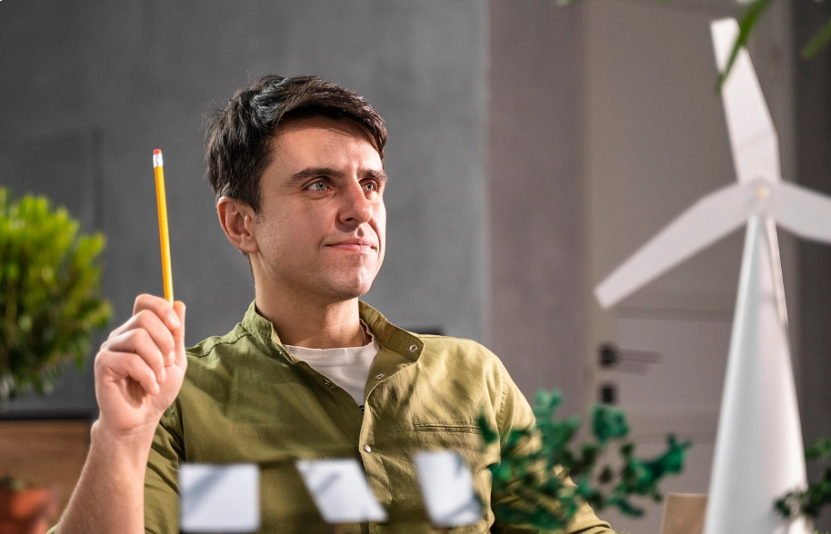
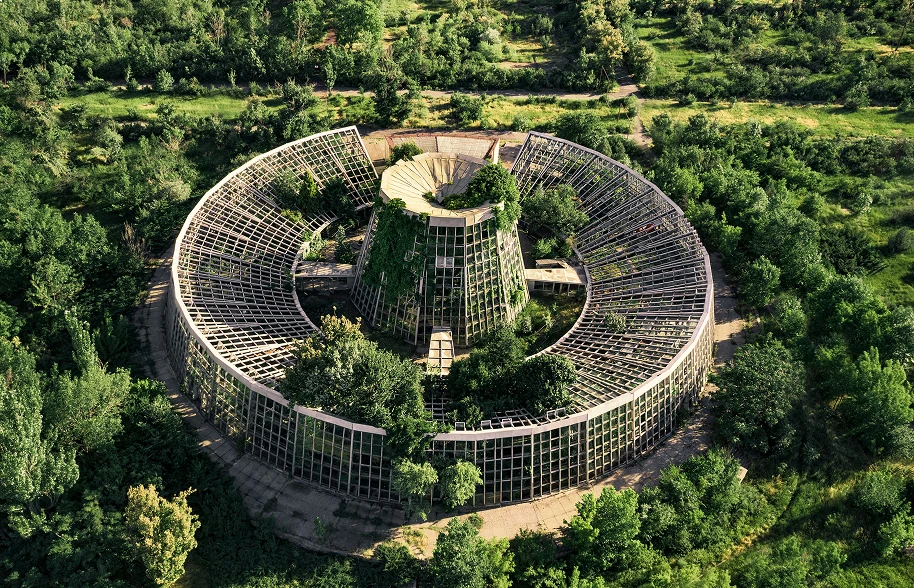

“Sequora made sustainability click for our whole team. Everyone finally understands our footprint and what to do next.”
Ava Mercer
Sustainability Lead
Measure what counts, cut what you can, and back verified projects that give back to the planet.


Trusted by 24,000+ teams building a lower-carbon future
Sequora brings your environmental data, reduction planning, and reporting into one clear workspace — so every team can see impact and act on it.
Clear, trustworthy data that helps you understand your footprint and act on it.
Measure, reduce, and report from a single workspace — no scattered tools, no friction.
Back well-vetted environmental projects built to deliver lasting, measurable change.
Real progress comes from pairing thoughtful innovation with everyday responsibility.
People and communities come first. We build tools that make sustainability clear and accessible.
Learn moreWe keep testing new ideas, methods, and perspectives to stay ahead of a changing field.
Learn moreClear steps, simple actions, and outcomes that matter. Sustainability should feel doable.
Learn moreWe partner with forward-thinking businesses to build clear, scalable, and measurable sustainability programs.
Analysts, designers, and advisors focused entirely on environmental progress.
Structured processes that help you measure, reduce, and communicate impact.
From data tracking to strategy, we guide every stage of your journey.
Every recommendation is backed by clear evidence and consistent review.
We simplify every step of your sustainability workflow — from understanding your data to taking confident action.
Collect key environmental data and get a clear picture of your current impact with simple, guided inputs.
Create actionable plans with guided tools, suggested targets, and structured workflows.
Spot reduction opportunities, optimize operations, and make smarter, data-led decisions.
Generate clean, transparent reports that show progress and build trust with stakeholders.
Grow with tools that adapt as your organization does, unlocking deeper insight over time.
“Sequora made sustainability click for our whole team. Everyone finally understands our footprint and what to do next.”
“Clear insight, simple tools, real results. It helped us turn climate ambition into a concrete, trackable plan.”
“We finally have a structured way to track our impact. The transparency and ease of use changed how we work.”
You can monitor key environmental indicators, understand your footprint, and watch how your impact changes over time — all in one place.
Yes. The platform scales smoothly, whether you're starting with basic tracking or managing complex, multi-site reporting.
Not at all. It's built for clarity, with simple dashboards and guided workflows that anyone can follow.
It surfaces opportunities to cut waste, use resources better, and prioritize the actions that move the needle most.
Yes. You can produce clean, transparent reports that communicate your achievements to stakeholders and customers.
Absolutely. Our team helps with onboarding, setup, and ongoing improvement whenever you need a hand.
Ideas, updates, and practical thinking for teams building a lower-carbon future.
View all articles
A short tour of the technology helping sustainability teams work smarter.

Practical changes that trim waste across busy teams.
The strongest environmental decisions come from simple, structured thinking.
Reach out for a quick conversation with someone on our team.
Talk to the team